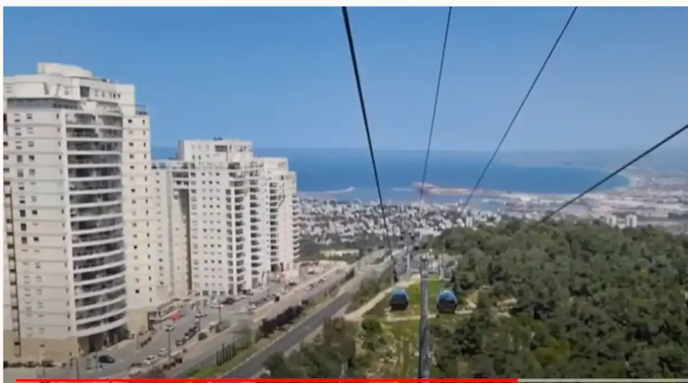
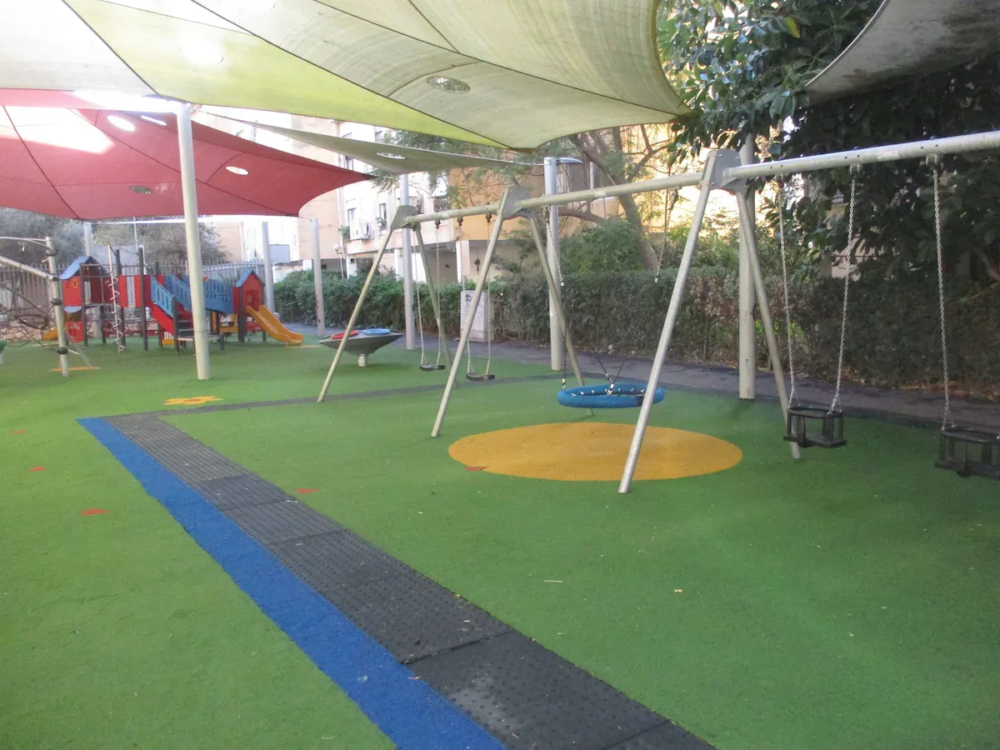
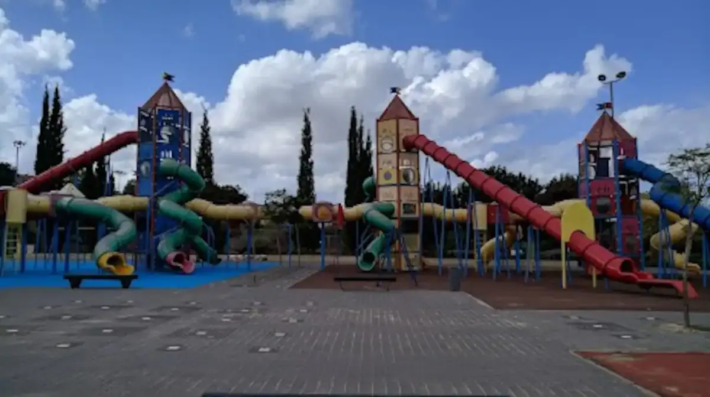

עיר הקודש קרית אתא נוסדה בשנת תרפ"ה על ידי יהודים חסידים מווארשא - שחיבת הארץ גרמה להם לעלות.
כיום זוהי עיר גדולה של כ 70 אלף נפש. והאוכלסיה שבה מאוד מעורבת.
במרכז העיר גרים הרבה מאוד תושבים שומרי מצוות ביחד עם אנשים שעדין לא זכו לצערנו.

מה תמצאו בעיר קרית אתא?
- זוהי עיר מאוד שקטה, אין בה הפגנות של השמאל בכלל.
- יש בה תפילות כמעט בכל שעות היממה. ראו כאן רשימה.
- החנויות נמצאות מתחת הבית ממש.
- החיבור בין כל הציבורים מאוד חזק (ספרדי אשכנזי וחסידי)
- האדמו"ר ממאקווא משפיע קדושה עצומה על כל בני העיר.
- אין חנות פתוחה בשבת!
- הרבה מאוד חנויות ומסעדותופיצות בכשרות רבנות מהדרין קרית אתא.

גינה בסמוך לדירות אירוח
מה אין בעיר?
- דירות עם חצר כפרית. (כמעט ואין חוץ מאצלנו - אתם מוזמנים מהר...)
- דירות עם נוף לים.
- אתרים לטיול - בתוך העיר עצמה יש מעט. (מסביב לעיר יש הרבה מאוד)
- חצר עם בריכה.

מקומות טיול
מסביב לעיר יש ממש הרבה מאוד מקומות לטייל
לחצו כאן לראות רשימה נפלאה: